History
Ancient
Celebrations similar to the spirit and nature of today's Christmas celebrations existed before the spread of Christianity. Around the winter solstice, a relevant time in most religions and cultures, it was initially a celebration of the Sun, or perhaps the rebirth of nature. In later times, it was also the time of Osiris, Iuppiter, Pluto and Nimrod, the Germanic Yule and the Roman Saturnalia.
The Roman Empire's state festival Saturnalia, held near the winter solstice from 17 to 25 December, was held in honour of Saturn, the god of agriculture. Huge dancing festivities were held throughout the empire. The triumph of light over exitus and darkness was celebrated. The old festival was full of merrymaking, as the winter solstice was a time of rebirth and hope among the old farmers. For them, the coming of warmth was relevant, as their very existence depended on it. The warm period was a time of abundance, while the cold period was a time of darkness and deprivation, when the gods were sought to bring good cheer. Giving gifts to servants was also common. Houses were decorated with evergreen ivy. The festival of Saturnalia was extended and ended so that the solar gods could keep their memorial day on the solstice of 25 December.
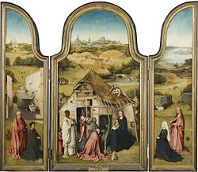
From the time of the Roman emperor Aurelian, 25 December was the birthday of the solar type Mithras and Sol Invictus (sun god), which was compulsory to attend. The way out for Christians was to start celebrating Jesus' birthday on this day. The pagan Germanic peoples celebrated the festival of jul (yule) at this time.
After Christianity became a permitted religion (313), the birth of Jesus was soon made an official holiday. The aim of the Christian celebration of Christmas was to put an end to the controversy surrounding Jesus Christ and to promote, through the liturgy, the resolution of the First Council of Nicaea (325) that Christ is both God and man in one person.
The choice of the date of the feast caused many difficulties, because at that time there were many conflicting ideas about the date of Jesus' birth. Thus, some say that Jesus was born on 20 May, others on 18 April, possibly 19 April, still others on 25 November, possibly 6 January. However, the choice was made for 25 December to counterbalance the pagan celebration of Mithras, also known as Sol Invictus (the Invincible Day), by introducing the celebration of Christ, Sol Salutis (the Day of Salvation). In connection with this, the earlier celebration of the birth of Jesus, Water Baptism, was given new meaning.
The Christian feast incorporated some elements of the earlier pagan feasts (many folk customs still recall this today). Particularly relevant in this dimension is the cult of Mithras, which was for a long time the main rival of Christianity. Mithras was associated with the Sun; some speculate that the later figure of Jesus was largely modelled on him (e.g. his virgin birth, his role as saviour, his celebration of 25 December, etc.).
The Sun as a symbol provided an opportunity to use Christian symbols. Christ is the symbol of the "Day of Truth", already found in Christian literature from the 2nd to 3rd centuries. Some Old Testament texts referring to the Sun were understood as referring to Christ, for example, "For you who fear my name today, the Sun of righteousness will rise." (Malachi 4:2) Particularly prophetic, and also rich in symbolism, is Psalm 19 (18), which refers to Christ.
The celebration of Christmas on 25 December was a major Western holiday of Roman origin, which gradually spread throughout Christianity in the 4th and 5th centuries and became fully universal in the 6th century. The importance of the feast is shown by the fact that the numbering of the years began to be counted "ab incarnatione Domini".
New Age
In the 16th century, the Reformation added new meaning to the celebration of Christmas. The church liturgy began to move into the home. Citizens began to celebrate religious holidays and rituals at home by turning the Bible at home. Many Christmas traditions were established, such as the Christmas tree decorations for evangelicals in Germany. By the 18th century, it was customary to put up Christmas trees all over Germany. From there, in the 19th century, it spread first to Austria, then to the rest of Europe, with emigrants to the New World, and thus became established throughout the Western Christian world. Christmas trees were initially decorated with sweets and fruit, but later on glass ornaments began to appear. The celebration of Christmas was also becoming a custom among non-religious families, as a celebration of love and peace, taking over some of the religious Christian rites.
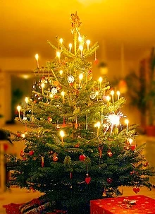
In Hungary, during the period of socialism, the state authorities sought to de-emphasise the holiday and to abolish its religious content. To this end, the possibilities for traditional celebration were made more difficult, especially during the 1950s (including by making the day after Christmas a working day, banning the payroll before Christmas, and informing on those attending midnight mass), and people were distracted from celebrating Christmas by a variety of programmes. The official language renamed it Pine Festival (the name was used until the change of regime for celebrations at the Parliament), but it was also the time when the third and fourth Sundays of Advent were renamed Silver and Golden Sundays. The traditional figure of Santa Claus (or Father Christmas) was replaced by the figure of Father Christmas. From the mid-1960s onwards, the treatment of the festive season gradually changed from an ideological to a commercial issue.
Nowadays, in the Judeo-Christian cultural circles of Europe, Christmas has become a popular and widely celebrated holiday, but with different meanings for different families.
Culture
Washington Irving Reinvents Christmas in America
It wasn't until the 19th century that Americans began to embrace Christmas. Americans re-invented Christmas, and changed it from a raucous carnival holiday into a family-centered day of peace and nostalgia. But what about the 1800s piqued American interest in the holiday?
The early 19th century was a period of class conflict and turmoil. During this time, unemployment was high and gang rioting by the disenchanted classes often occurred during the Christmas season. In 1828, the New York city council instituted the city’s first police force in response to a Christmas riot. This catalyzed certain members of the upper classes to begin to change the way Christmas was celebrated in America.
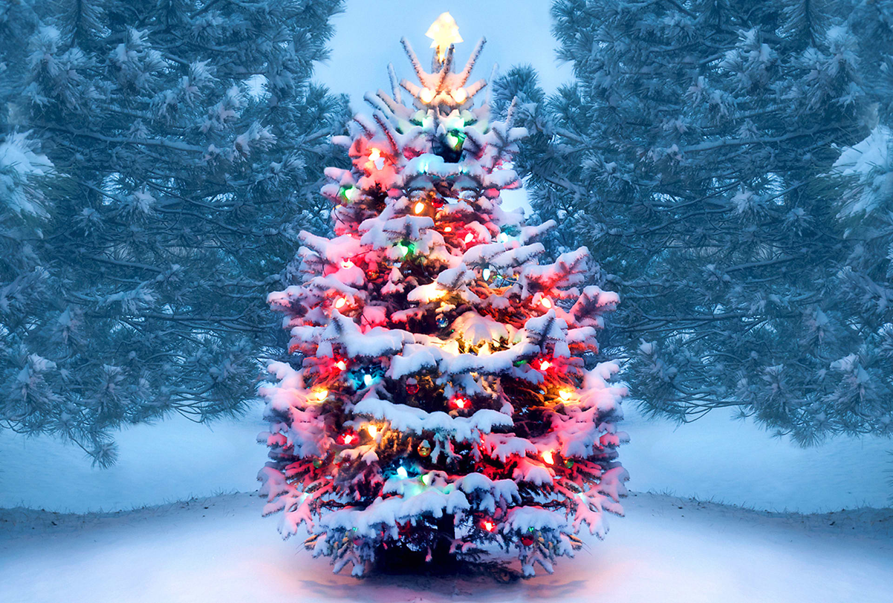
In 1819, best-selling author Washington Irving wrote The Sketchbook of Geoffrey Crayon, gent., a series of stories about the celebration of Christmas in an English manor house. The sketches feature a squire who invited the peasants into his home for the holiday. In contrast to the problems faced in American society, the two groups mingled effortlessly. In Irving’s mind, Christmas should be a peaceful, warm-hearted holiday bringing groups together across lines of wealth or social status. Irving’s fictitious celebrants enjoyed “ancient customs,” including the crowning of a Lord of Misrule. Irving’s book, however, was not based on any holiday celebration he had attended—in fact, many historians say that Irving’s account actually “invented” tradition by implying that it described the true customs of the season.
Celebrating
Xmas in Hungary
for Catholic Christians in our country, the highlight of the day of Jesus' birth is attending Christmas mass (midnight on the 24th or midday on the 25th). Reformed Christians attend a service on Christmas Eve, or 24th, and then take communion the next day. On 24 December, Catholic families traditionally fast (Christmas fasting), but only in the evening. Originally it was apples, walnuts, honey, garlic, then buttered bean soup without meat (Lent bean soup), then poppy seed beans, but more recently fish and stuffed cabbage have been added to the table.
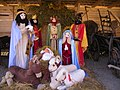
According to folklore, the Christmas table played an essential role in the festive season. There was a strict order to the decoration of the table, and also to the meal. The dishes served were believed to have magical powers. In the past, the Christmas tablecloth was used in the spring as a seedbed, and was also used to sow the first grains of cereals to ensure a good harvest. Grain kernels were placed on the laid table and given to the poultry to help them lay eggs, and straw was placed under the table to commemorate the birth of Jesus in a manger. In later years, this straw was put under the cattle to keep them healthy, but there were also cases where it was tied to fruit trees in the hope of a good harvest.
As part of the strict rituals, the farmer's wife was not allowed to leave the table during dinner so that she could have well-laying hens.
 Christmas lunch, or perhaps Christmas dinner, would follow on 25 December. This is when the family or extended family gathers together to enjoy a Christmas meal. For Hungarians, the intimate family gathering is typically on the evening of the 24th (Christmas Eve), while in Western European countries it is usually the 25th.
For non-religious but Christian people, Christmas is typically a time of love and family togetherness. It has become a common custom to give presents to loved ones at Christmas. In the weeks leading up to Christmas Eve, shops and supermarkets try to take advantage of the gift-giving habit and to increase their profits by advertising - often distorting the traditional and true meaning of the holiday into a mere fever of consumption.
Christmas lunch, or perhaps Christmas dinner, would follow on 25 December. This is when the family or extended family gathers together to enjoy a Christmas meal. For Hungarians, the intimate family gathering is typically on the evening of the 24th (Christmas Eve), while in Western European countries it is usually the 25th.
For non-religious but Christian people, Christmas is typically a time of love and family togetherness. It has become a common custom to give presents to loved ones at Christmas. In the weeks leading up to Christmas Eve, shops and supermarkets try to take advantage of the gift-giving habit and to increase their profits by advertising - often distorting the traditional and true meaning of the holiday into a mere fever of consumption.
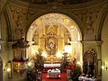
In the past, the nativity scene was one of the best known and most widespread Christmas traditions, a dramatized play with several characters, and it was known throughout the state and is still practiced in many places. The most important element of the village nativity was the play of the shepherds of Bethlehem in dialogue and song. The main element of the dramatized play was based on the biblical story of the three shepherds worshipping baby Jesus, including the humorous dialogue of the old shepherd who was hard of hearing. The main props of the nativity play were a church-shaped nativity scene featuring the Holy Family. The characters in the pastoral play were the two angels carrying the church, the three shepherds, and, in the Satu Mare region, the hussar, and the figure of the outlaw.
English Christmas
A giant decorated Christmas tree in Trafalgar Square, London
Christmas preparations in the UK start as early as October. Entrance doors and windows are decorated with pine boughs, candles, nuts and hazelnuts, and a decorated Christmas tree is placed in the room. At the beginning of November, the streets are dressed up for Christmas, and although Father Christmas appears at the beginning of December, Santa Claus Day on 6 December is not celebrated.
24 December (Christmas Eve) is a working day, and it is common for people to go out for a nightcap with colleagues after work (the 'official' end-of-year parties and balls at work are usually held on an earlier day, close to Christmas).
Midnight mass is also common in Anglican churches, although it often starts before midnight (e.g. at 23:30).
Crackers, a must-have for an English Christmas
English Protestants go to church on 25 December (Christmas Day), after which they open the wrapped presents that have been gathering under the Christmas tree in many families all month, but are only allowed to be opened on this day (legend has it that Santa Claus brings the presents through the chimneys of the fireplaces).
Christmas pudding, a traditional English Christmas cake
After the opening of presents comes the festive lunch. An inevitable part of Christmas is a cracker in the shape of a snipe, which pops when opened and contains small presents. The traditional Christmas lunch is a turkey stuffed with chestnuts, vegetables (Brussels sprouts, carrots, parsnips, mashed green peas, potatoes) and cranberry sauce. The most common dessert is Christmas pudding, a cake with a base of dried fruit (prunes, raisins, figs), lemon juice, orange juice, brandy, sweet spices and other delicacies.
Another unmissable event on this day is The Queen's Christmas Message, a tradition dating back to 1932, broadcast by the BBC and watched by most people in the UK.
26 December is Boxing Day, the term translated as "Boxing Day". There are many variations on the origin of the name. It is a bank holiday, on which banks and other offices are closed but shops are open.
It is a feature of English holidays that if they fall on a weekend, the following working day is designated as a public holiday: in years when 25 and/or 26 December falls on a weekend, the 27 (and 28) are public holidays.
Church attendance
Christmas Day (inclusive of its vigil, Christmas Eve), is a Festival in the Lutheran Churches, a solemnity in the Roman Catholic Church, and a Principal Feast of the Anglican Communion. Other Christian denominations do not rank their feast days but nevertheless place importance on Christmas Eve/Christmas Day, as with other Christian feasts like Easter, Ascension Day, and Pentecost.
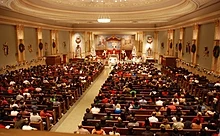 As such, for Christians, attending a Christmas Eve or Christmas Day church service plays an important part in the recognition of the Christmas season. Christmas, along with Easter, is the period of highest annual church attendance. A 2010 survey by LifeWay Christian Resources found that six in ten Americans attend church services during this time. In the United Kingdom, the Church of England reported an estimated attendance of 2.5 million people at Christmas services in 2015.
Gift giving
Why do we give presents at Christmas?
As a child, it's taken for granted that you will receive presents from the celebrant, baby Jesus, at Christmas. As an adult, you wonder why you surprise your loved ones at Christmas. Surprising as it may seem, the custom is very ancient, with pre-Christian traditions.
Today, the run-up to the holidays is for many people a time of anxiety and gift-hunting, and the question arises: why do we give presents at Christmas?
The answer is not simple, as it is not clear exactly where the tradition originated. Historical evidence suggests that the gift-giving of children was not originally a matter of right or wrong behaviour, and presumably not even really rooted in Christian custom.
In any case, tradition has it that the gifts symbolise the objects that the wise men of the sunrise brought as gifts at the birth of Jesus.
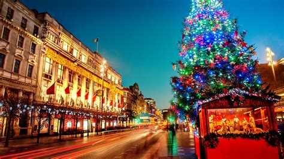
Giving gifts at the middle and end of December was a custom in ancient times, long before Christianity: the Romans also surprised each other at the Saturnalia in honour of the god Saturn.
In Christian circles, gifts were originally given on New Year's Eve, but by the 4th century, Saturnalia had given birth to Christmas, and in many places the tradition began to be linked to the end of the earlier Saturnalia, on 25 December. At about the same time, the story of St Nicholas (Santa Claus) became popular, and in some regions his day, 6 December, became the feast of gift-giving.
It was only in the 19th century that large-scale gift-giving, which is typical of the present period, became commonplace. The practice spread to the United States around this time, coinciding with the transformation of the American holiday. During this period, Christmas was often about partying for young men, and the elite wanted to celebrate the birth of Jesus in a much more peaceful, domestic setting.
By the second half of the 19th century, Christmas was no longer the primary time for gift-giving, on 6 December, St Nicholas' Day, and in early January. The economic players, who recognised the commercial potential of the holiday, played a major role in strengthening this custom.
Musics & Films
The Christmas Cronicles (2018)
This year, brother and sister Kate and Teddy Pierce are going to see Santa Claus - but the prank will lead them on adventures the darkest child could never dream of. But if Christmas is to be saved, it will need all hands on deck.
Tradition
One uniquely American tradition during the holidays is watching specific movies and TV shows that put us in the holiday spirit. There are a number of favorites that range from old movies to cartoons. What better way to celebrate the holidays than with timeless classics such as “It’s A Wonderful Life,” “Miracle on 34th St.”, or “The Christmas Story?” Don’t forget those cartoons that will forever be a part of the holidays, such as “Rudolf the Red-Nosed Reindeer,” “A Charlie Brown Christmas,” and “Frosty The Snowman.” While some of those older movies and cartoons may not be as popular for the younger generation, you can always find more recent family favorites that bring a smile to your face, such as “Home Alone,” “Elf,” “ or “The Grinch Who Stole Christmas.” As most of us have some time off during this time of the year, there are also a number of blockbuster movies that will be released during the holidays. Kick back, relax, and enjoy these great movies and shows during the holidays.
Once you have had your fill of binge-watching holiday movies, you may want to participate in one of the oldest Christmas traditions, which dates back to the 15th century. That is, of course, selecting and decorating a Christmas tree. Each year, 30-35 million real Christmas trees are sold in the United States alone. Whether you go and cut down your own tree, buy one, or use an artificial tree, decorating a tree is one of the first signs that the Christmas holiday season is upon us. If you do plan to venture out and find a real tree, finding the perfect one may take some time. You may want to consider things such as the scent, how sturdy the branches are in order to hold all of the ornaments, whether it drops a lot of needles, the price, color, shape, height, and so on. While there are a lot of variables to consider, you will know when you find the perfect one for your home. Once you do finally get the tree into your home, the decorating fun begins. Start with a festive tree skirt as the base of your Christmas tree. Adorn your tree with lights, tinsel, garlands, ornaments, and a number of other trinkets that suit your family theme and taste. Many families hang a special ornament each year that holds a special significance to them. Start a family Christmas tradition of adding one special ornament each year to your tree. Minted offers personalized Christmas photo ornaments in case you wanted to create special ornaments to send out to your loved ones this year.
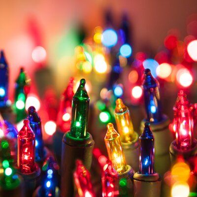
Holiday decorating is not limited to just the tree. Decorate your home with Christmas light displays and be the envy of your neighborhood. Some displays even coordinate the lights to turn off and on in unison with popular Christmas songs. Families often travel from miles around to search for the most beautiful light displays. While you are decorating your home, don’t forget to hang stockings for each of your family members, even that special pet. Remember, you don’t have to have a fireplace to hang stockings. You can hang them from the staircase railing, from garland, on a bookcase, the footboard or headboard of your bed, your TV stand, and so many other places. Be creative! You may also want to read through our post on Christmas mantle decoration ideas.
The tradition of hanging a strand of mistletoe in the house goes back to the 2nd or 3rd century. Mistletoe was said to have powers that bring good luck to a home by getting rid of evil spirits. More commonly, it was also used as a sign of love and friendship. This is where the custom of kissing under the Mistletoe originates. If you’re curious about where you can purchase mistletoe nearby, consider Home Depot, Lowes, your local hardware store, the garden section of Walmart or Kmart, or the pop-up Christmas tree sales tent.
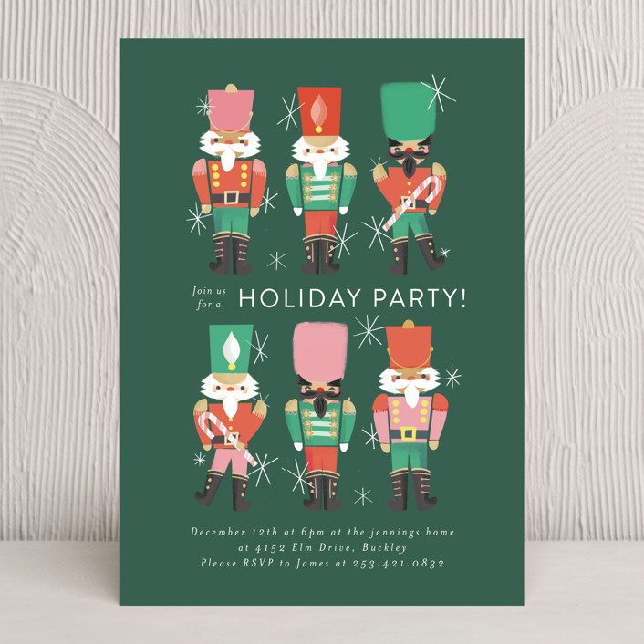
Of the many Christmas traditions celebrated around the world, the most common thread is the celebration of a shared meal. Create memories and reflect on the year by joining friends and family together to enjoy a delicious meal. If the idea of interacting with a larger group this holiday season has you feeling uneasy, look to just host a special meal with your immediate household. As you might imagine, there are countless food choices that people enjoy throughout the world during Christmas, however, there are some main staples that are a part of many Christmas meals. Some classics include roast turkey, ham or chicken, potatoes, stuffing, and of course you cannot forget the gravy. You can also pair the food with some cocktails too. If you're hosting, you can create a merrier ambiance around the dining room and kitchen with napkin sets and tea towels in Christmas patterns. Some candles and garland in the dining table set the mood for this Christmas dinner with your loved ones. Little accents and decorations here and there in the house will certainly make the season brighter and warmer for everyone. Not everyone shares the same seasons and climate. In some parts of the world, there could be hotter temperatures during Christmas, which would result in serving colder or lighter dishes. Serving roasted meats cold or enjoying seafood recipes may be more common in warmer climates.
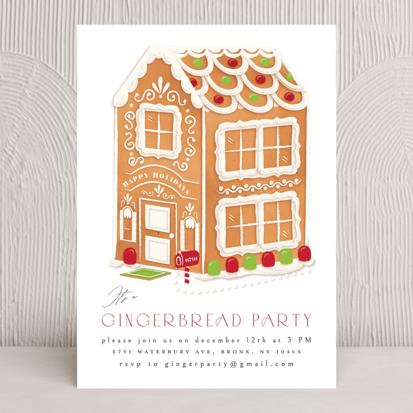
While we all love a good meal, the actual process of baking together is often a family tradition in itself. Making cookies, baking pies, or building gingerbread houses falls in line with the holiday spirit that it is better to give than receive. Don’t forget to set a few cookies aside (with a glass of milk) for when Santa pays a visit. Some popular Christmas snacks include: Sugar cookies with intricate decorations Gingerbread men Yule log Pumpkin Pie Puppy chow/reindeer chow (Chex Mix treat)
Gift giving is one of the most beloved traditions of Christmas (especially for children) and it goes back to when the Three Wise Men offered gifts of gold, frankincense, and myrrh to baby Jesus in the manger. Gifts are usually placed under the Christmas tree or within stockings in festive patterns. Browse some unique gifts you can get for your family and friends.
Exchanging greeting cards has become a huge tradition during the holidays. It is a great way to communicate with friends and family and express that you are thinking of them. This year has been a very unusual one, with many of us not venturing too far from home, which means it has likely been a while since some of your more distant friends and family have seen your face. The annual holiday card greeting will be appreciated that much more this December.
The Elf on a Shelf phenomenon became a family Christmas tradition close to 15 years ago. It is derived from a children’s story about Santa’s elves watching over children and reporting back to Santa about the good and bad activities of the children observed that day. The tradition has become extremely popular amongst adults and kids, as the Elf hides in a new spot every morning around the house and the kids try to find it. The elves are said to have magical powers derived from being adopted and loved by a child. However, the kids must follow one simple rule and that is to not touch the elf or the elves may lose their magic. If touched, the elves cannot report the children’s Christmas wishes back to Santa.
Music plays a large role in many Christmas traditions around the world. We listen to holiday favorites with family and friends and have our playlist of favorite songs, such as “O Holy Night,” “Let It Snow,” “Jingle Bells,” and many others. One Christmas tradition that has been passed down from many generations is caroling, in which a group of people shows up at homes to serenade inhabitants with holiday music. Some grade schools and high schools have even adopted the practice by encouraging certain groups of students to travel from classroom to classroom singing. This tradition or caroling dates back to the 19th century and is still practiced in many countries to this day.
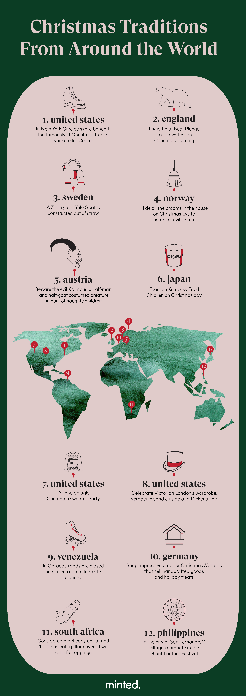
Countless German cities like Berlin, Munich, Nuremberg, and Duesseldorf host impressive Christkindlmarkts, or Christmas Markets, where locals and tourists can shop hand-made souvenirs and seasonal-themed edible treats like lebkuchen and pfeffernüsse. Some of these outdoor markets and villages have been re-created each year dating back 500 years. If you do find yourself at a German Christmas market this year, be sure to observe any social distance advisories and mask-wearing protocols.
This theme has become fairly popular over the last few years. Outfits our parents and grandparents wore during the holidays (considered fashionable at the time) are now the butt of the joke at these gatherings and have become a funny family pastime. The tradition of wearing over-the-top holiday sweaters will most likely stay strong and continue to bring people together for some laughs. Consider hosting an ugly Christmas sweater party! In line with dressing up, be sure to check out our list of Christmas outfit ideas for the perfect family holiday card.
How would you like to take a nice swim in freezing cold water on Christmas morning? This may not be for you but hundreds of people in Brighton, England schedule a Christmas day dip every year with just a swimsuit and their Santa hat. This tradition is not exclusive to Brighton but also practiced in London’s Serpentine Lake, Sandycove, Dublin, and plenty of other cold bodies of water around the world. The thought of jumping in frigid Irish waters on Christmas morning is not for everyone!
One of Norway’s Christmas Eve traditions that dates back centuries is the act of hiding all the brooms in the house. This act deprives the witches and evil spirits of finding something to ride on.
Before Venezuelans in Caracas head home to enjoy their Christmas day feast of tamales, hundreds head to church on roller skates. Roads all across the city are closed to cars so people can partake in this unique annual tradition and skate to church in safety.
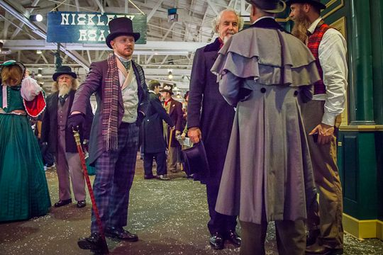
Numerous cities throughout the U.S. and Europe host a Dickens Fair tradition each holiday season. San Francisco has been hosting one annually since 1970. Attendees will feel as though they have time-traveled back in time to a Victorian London setting where old-timey vernacular is used, vintage clothing is adorned, and bangers and mash are served at every other food stall.
On the Saturday before Christmas Eve, eleven villages in the city of San Fernando in the Philippines create giant lanterns in an annual competition. Known as The Giant Lantern Festival, this competition attracts people from all over the country to view this spectacle. The lanterns started off as small and simple creations, but over the years the lanterns have become more elaborate and much larger, reaching close to 20 feet. The lanterns are shaped in kaleidoscope patterns and are illuminated with electric bulbs.
One of the scarier traditions around the holidays takes place in Austria. While St. Nicholas rewards nice little boys and girls with presents, his evil accomplice, Krampus, is said to capture the naughty children and take them away in a sack. Krampus is described to be a half-man, half-goat and young men dress up in costume to frighten kids during the Krampus Parade, which has grown in popularity across Europe.
In Sweden, they construct a giant straw goat, known as The Yule Goat, which is over 42 feet high, 23 feet wide, and weighs over 3 tons. Every year, the goat is built in the same spot. If you are not able to view the Yule Goat in person, you can watch a live stream from the first Sunday of Advent until after it is taken down at the beginning of the New Year. More recently, vandals have been setting the Yule Goats on fire, which is easy prey given that it is made from straw.
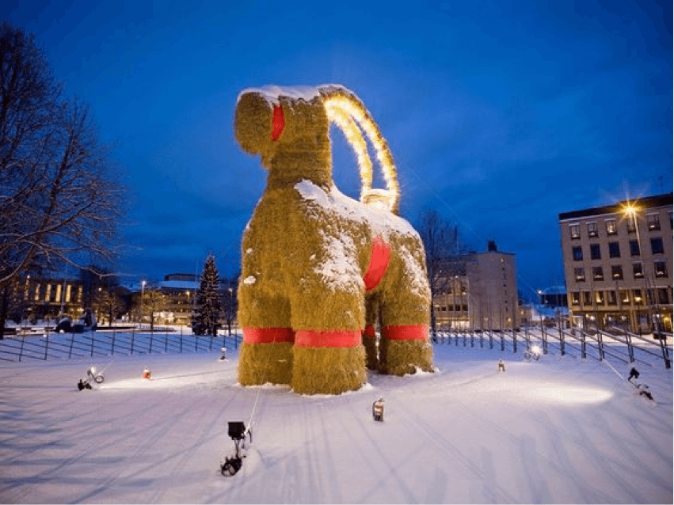
The Rink at Rockefeller Center has to be one of the most iconic outdoor ice skating venues in the world. The seasonal rink opens around the end of October each year but starts to really lure in skaters once the Rockefeller Center Tree is lit in early December. Call ahead to learn what special socially distanced guidelines may be in place.
Stories about Christmas
My Christmas (usually)
Christmas in Hungary starts with Christmas Eve, when we put up the Christmas tree with the family and give presents to each other. On Christmas morning, my brothers and I go down to play football for a few hours.
After noon, typically after lunch, we wrap the presents, we usually put up the Christmas tree around 5 or 6.
We always have stuffed cabbage and chowder at Christmas, cakes, and a few other main dishes (these usually vary).
At Christmas (24th to 26th) we watch Christmas movies all the way through, and we also listen to Christmas music, I play Christmas music on the piano if I can, and now also on the guitar.
I usually work on the 26th (4-8 hours), it's a double pay day, so if I don't have anything better to do, I'll put myself on the schedule for that day.
On Christmas Eve, after the vachora, there is a gift giving.
On the 25th we go to relatives, or they come over for Christmas, 26a is also such a day, but that day is an incabaculum, just relatives coming over.
With the family on Christmas 25, we also go to church to celebrate the birth of Jesus Christ.